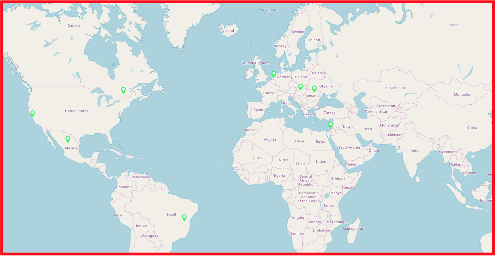

FIRST Community
Why do we reach out to the FIRST Community?
We reach out to the FIRST community because we believe that it is one of the best ways to make the FIRST experience more fun and engaging.
FIRSTWorldSolutions
Impact: With this program, we build connections between our team members and the worldwide FIRST community, and learn about FIRST around the world.
“ 20 teams, 20 countries, One FIRST ”
With our newest Outreach initiative FIRSTWorldSolutions, we make connections between our team members and robotics students from all over the world. Our goal for the 2019-2020 year is to videochat with 20 different FTC or FRC teams from 20 different countries. Our process is to use the FIRST website search tool to find teams in different countries. Then, we try to reach out to them on Instagram to get in contact with someone from their team. Then, we set up a date and time for a call that works for multiple members of both teams. Due to time differences, we often schedule calls for Wednesday mornings before school when we have a late school start time. We use a program called Whereby to video chat after some experimentation with different programs. We have video-chatted with teams from Canada, Brazil, Israel, Mexico, the Netherlands, Hungary, and Romania.
On these calls, we speak to members of the other team and hear about how they do FIRST. Conversation topics often include robot design and engineering process, training, business, marketing, outreach, recruitment, team bonding, the culture of FIRST in their area, and more. Often, we find many things we have in common with these other teams. We also find it fascinating to see how FIRST varies around the world. After each call, we document progress and post on Instagram.
Collaboration Projects
Impact: Collaborating with other teams allows us both to learn and grow. We make friends and strengthen the FIRST community in our immediate local community.
- Burlingame High School - Iron Panthers
In the fall, members of our - Notre Dame High School - Tigerbots
In the fall, members of our team visited the Notre Dame robotics shop. Our goal was to get information about Outreach, specifically the programs with Girl Scouts that Tigerbots had already started. Because Notre Dame High School is an all-girls school, their robotics team focuses heavily on bringing more girls into STEM. When we visited their team, we learned about their Outreach, got to know their team members, and saw their current FTC robot for Rover Ruckus. - San Mateo High School - San Mateobotics
San Mateo High School formed a new FTC team and competed for the first time in the 2018-2019 season. Their FTC team reached out to us requesting to visit our shop and get some tips from us. In October 2019, several of their members visited us during one of our regular meeting times. Their build members spent time with our FTC team captains learning about our prototyping process, and their business members worked with our Outreach and Marketing captains to get ideas for jumpstarting their own team’s Outreach for this year. - Carlmont High School - Deep Blue Robotics
I don’t know what we did with Deep Blue because NOBODY TOLD ME :) - Gunn High School Robotics Team
Gunn High School helped us organize Night of Robots, an event we hosted with 50 elementary school students in collaboration with BrainVyne. We worked with students from their school to publicize the event and get sign-ups. They held the event first in 2018, so when we hosted the event, they gave us information about planning it. One of their team members attended our event and helped organize it.
Workshops
Impact: Sharing our expertise and resources allows our wider impact to grow as other teams develop their own Outreach with our programs as role models.
Saturday, September 7th, 2019 was the Kickoff for FTC Skystone. Our FTC team attended Kickoff at Jefferson High School in Daly City, CA. After applying for a slot, we were approved to teach a workshop on our Outreach. Members, Mentors, and parents from more than 25 FTC teams from around the Bay Area attended one of the two sessions of the workshop.
Our Business Captain Shelby and Outreach Specialist Riddhi prepared and presented two hour-long workshop on all the Outreach events Aragon Robotics has recently done. They gave advice for starting Outreach programs with a rookie team or a team that doesn’t have many of their own Outreach programs. Our team collected contact information from all the students who attended this workshop and sent a follow-up email with information about the programs we talked about and resources for running Outreach programs. We received largely positive feedback from attendees, parents, and Aragon Robotics members who attended, so we decided to present a slightly modified version of the workshop to all the new members of our own team the following week when we returned to school. We felt that this was an adequately detailed introduction our team’s Outreach.
Later that week, Dianne France, the FTC Programming Coordinator for Northern California, reached out to us for a copy of the presentation. We sent her the link so the workshop could be made available on the FIRST website, and we uploaded the video of the whole workshop to our YouTube so other teams who weren’t able to attend in person can have access to our resources and hear us teach the workshop.
Volunteering in India
Impact: Teaching engineering skills to students in another country exposes kids to robotics who might not otherwise get the opportunity to experience STEM activities.
In summer 2019, one of our FRC Captains Aryan Mondkar travelled to India to inspire young minds in the public schools of Mumbai. He worked with a group of 7th and 8th graders to teach them basic robotics through the Lego Mindstorms EV3 sets. He could tell right away that the children in India were very interested in what he was teaching because they hadn’t been exposed to anything similar previously. Because of the students’ impressive progress, Aryan helped them start the FLL team registration process.
#FIRSTLikeAGirl
Impact: By showcasing positive female role models from our team, we encourage and empower other girls to join our team or get involved in other STEM activities.
According to firstlikeagirl.com,
#FIRSTLikeAGirl strives to provide:
- Encouragement to believe!
- Role Models to see the possibilities!
- Inspiration to dream big!
- Confidence to make it happen!
We work with FIRSTLike AGirl by making videos to showcase our own strong girls in STEM. We started with three of our engineering veteran members, and plan to make more videos this year with second-year team members who are willing to speak about their experiences.